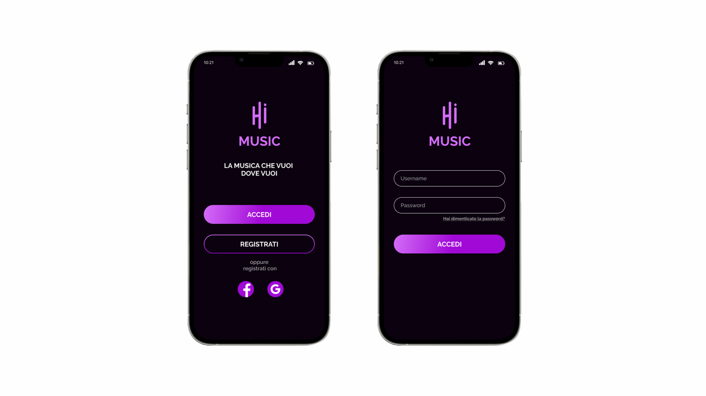
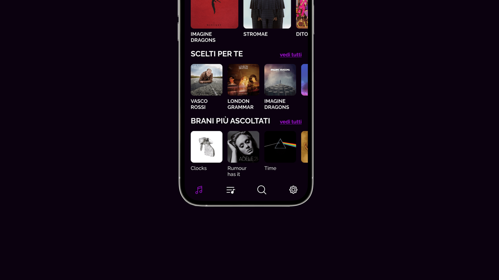
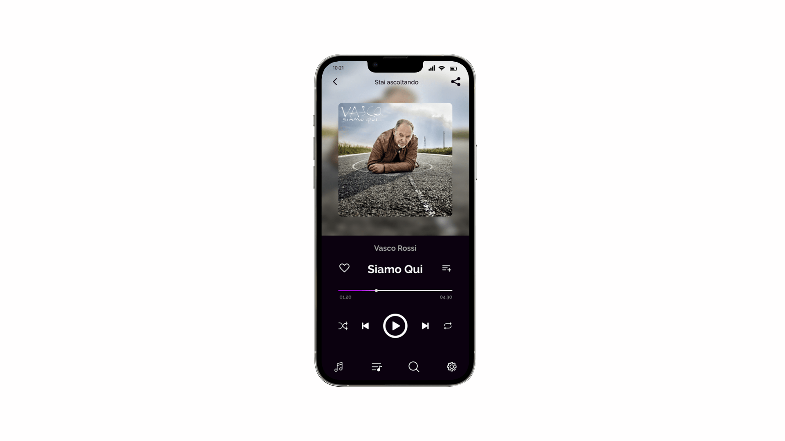
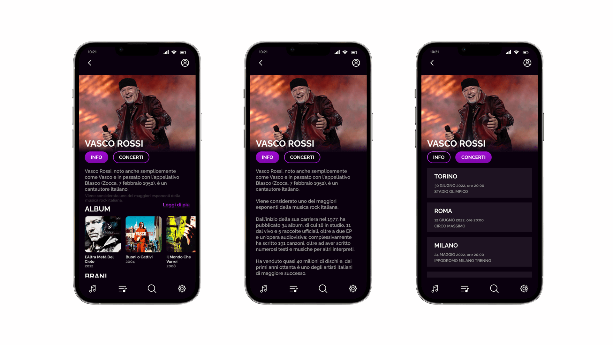
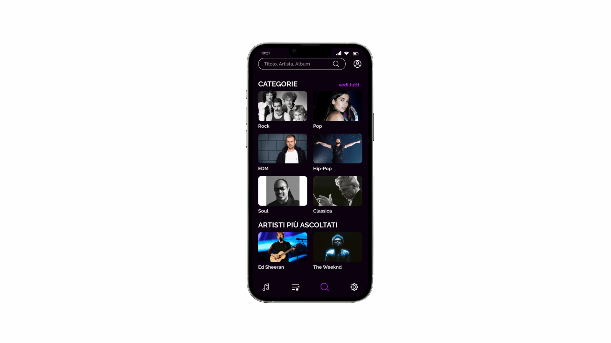
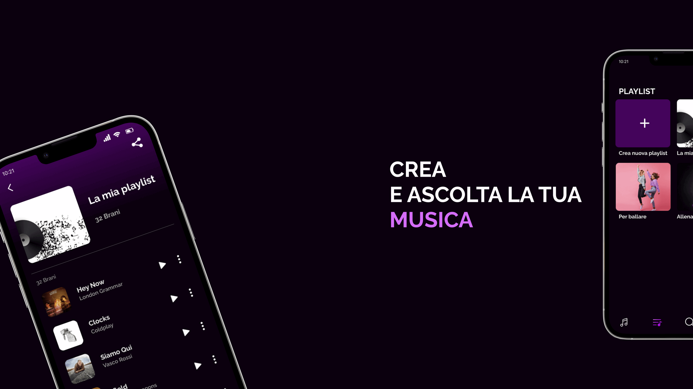
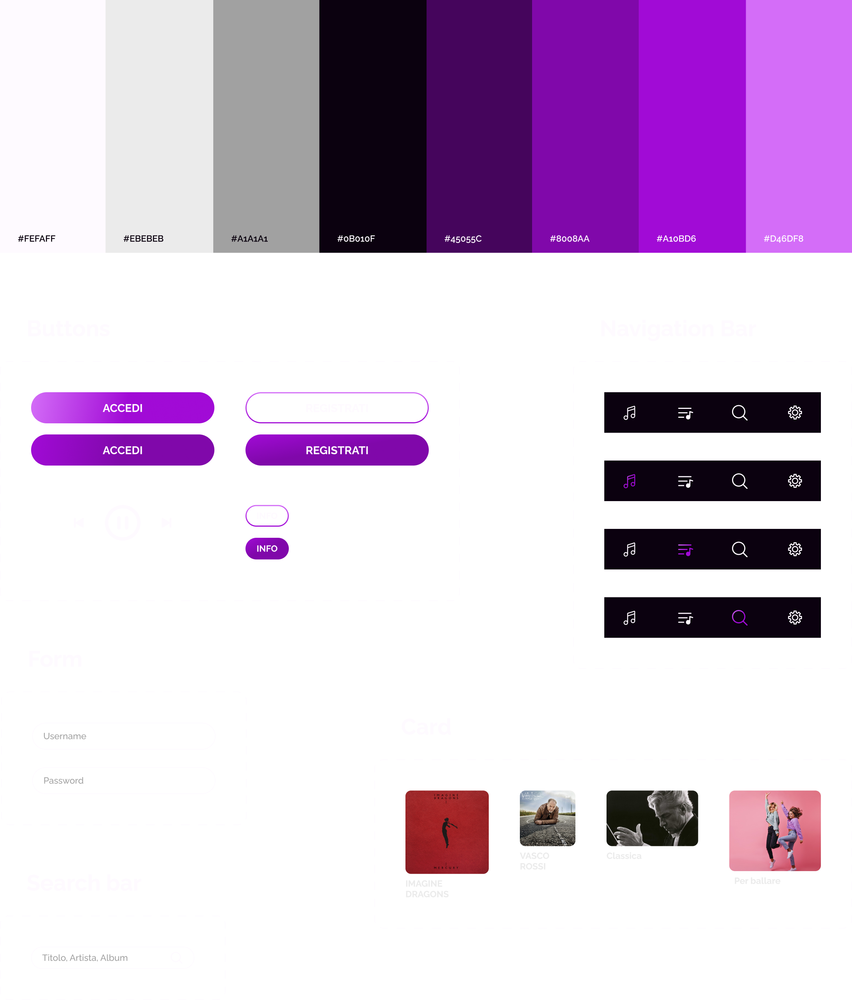

Ascolta la tua musica con...
Hi-Music
Hi Music è una nuova app che permette agli utenti di ascoltare musica in streeming e condividerla con chi si vuole.
Il progetto
La progettazione dell’app Hi Music parte mettendo gli utenti al centro del progetto . L' obiettivo è creare un'app mobile che, grazie ad un processo di navigazione intuitivo ed una interfaccia minimal, coinvolga tutti gli utenti.
Soluzione
La soluzione che ho adottato à stata quella di ideare e creare un'app che consente agli utenti di:
· Interagire con un’interfaccia dal design minimal ed intuitivo;
· ricercare le canzoni in diversi modi;
· creare la propria playlist, in base ai loro gusti e alle occasioni;
· Condividere tramite dei semplici passaggi, una singola canzone o una playlist.
Processo
Il processo è iniziato con il definire tutti gli elementi grafici per proseguire con la realizzazione delle interfacce che costituiscono l'app.
Accedi/Registrati
Quando gli utenti avviano l'app, verranno guidati attraverso un processo di accesso o registrazione.

Homepage
La home presenta una panoramica chiara e personalizzata. Offre agli utenti diverse possibilità di ascolto musicale in linea ai propri gusti.

Riproduzione brani
Nella scheda di riproduzione del brano è possibile aggiungerlo direttamente tra i preferiti e, condividere immediatamente il brano/ l'album/ il cantante di suo interesse, cliccando la relativa icona posta in alto a destra.

Info sul cantante
La scheda fornisce in modo semplice e chiaro tutte le informazioni sulla carriera dell'artista, i suoi album e i suoi brani. Grazie alla navigazione dalla tab bar l'utente può visualizzare anche tutte le date dei prossimi concerti.

Ricerca
La scheda ricerca è stata progettata per effettuare una ricerca mirata di un brano/artista/album o per una ricerca più esplorativa attraverso altre categorie. Questo tipo di organizzazione garantisce all’utente un’esperienza d’ascolto personalizzata, aiutando a scegliere anche chi non sa cosa ascoltare.

Playlist
Nella sezione playlist è possibile ascoltare brani già aggiunti nella libreria personale o creare una nuova playlist.

